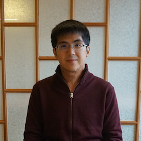

[photo by Ching-Yu Chen]
Yi-Hsiu Chen
About Me
I am a third year Ph.D. student studying computer science in the Theory of Computation Group at Harvard University. I am fortunate to have professor Salil Vadhan as my advisor. Before that, I studied physics at the National Taiwan University and computer science at the Columbia University.
My research interests include pseudorandomness and theory in differential privacy. During the visiting at Academia Sinica of Taiwan in 2015-2016, I was hosted by Kai-Min Chung. He lead me into the world of quantum information, which became a part of my research interest.
Contact Information
Office:
Harvard John A. Paulson School of Engineering and Applied Sciences
Maxwell Dworkin 138
33 Oxford St.
Cambridge, MA 02138
Email: yihsiuchen@g.harvard.edu
Research
-
Mark Bun, Yi-Hsiu Chen, and Salil Vadhan.
Separating Computational and Statistical Differential Privacy in the Client-Server Model
TCC '16-B,
[ePrint]
[slides]
Computational Notions of Quantum Min-Entropy
[arXiv]
Teaching
I am a TF of CS225 Pseudorandomness in Fall 2016.